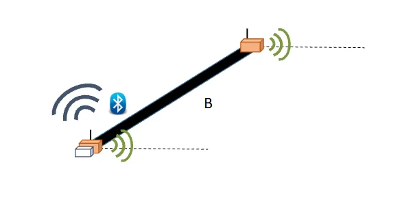
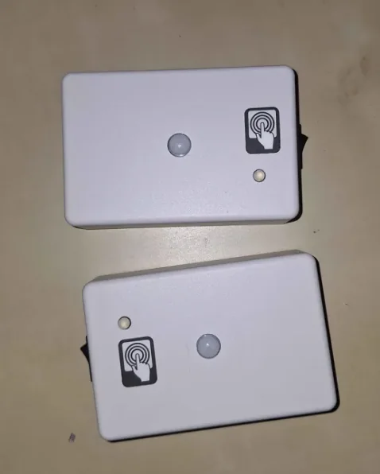

Dispositivo de medida de la velocidad de la marcha
Convertimos un prototipo poco usable y obsoleto en un dispositivo inalámbrico de dos nodos, con batería de meses, más económico y con marcado CE, para medir con precisión la velocidad de la marcha.
Hablemos de tu proyectoDe un vistazo
- Antes
Un prototipo preciso pero inusable
Un prototipo medía la velocidad de la marcha con precisión, pero no era nada usable y estaba obsoleto.
- Ahora
Dos nodos inalámbricos con batería de meses
Una solución inalámbrica basada en dos nodos, con la misma precisión, mejor usabilidad y un coste de producto menor tras optimizar la lista de materiales.
- Resultado
- Batería de mesesautonomía en uso real
- Menor costelista de materiales optimizada
- Marcado CEfabricado a través de nuestros socios
Contexto
Desarrollamos para MG Biomed un dispositivo de medida de la velocidad de la marcha.
La velocidad de la marcha es uno de los indicadores más utilizados para valorar la fragilidad en personas mayores. Medirla con precisión y de forma sencilla permite detectar antes el riesgo y hacer seguimiento a lo largo del tiempo.
Problema
Existía un prototipo capaz de medir la velocidad de la marcha con precisión, pero no era nada usable y además estaba obsoleto.
Un prototipo así sirve para demostrar que la medida es posible, pero no para usarlo de forma habitual en la práctica ni para fabricarlo como producto.
Solución
Pasamos de aquel prototipo a una solución inalámbrica basada en dos nodos, con una batería que dura meses. Mantiene la precisión y mejora claramente la usabilidad.
Además, revisamos y optimizamos la lista de materiales (BOM) y con ello reducimos el coste del producto.
Desarrollamos un nuevo prototipo y el dispositivo se ha fabricado con marcado CE a través de nuestros socios.
Es el tipo de trabajo que hacemos en IoT y hardware y en usabilidad e interfaces para mayores.


Resultados
El producto mantiene la precisión del prototipo original, es más fácil de usar, funciona de forma inalámbrica con una batería que dura meses y cuesta menos de fabricar.
Cuenta con marcado CE y se fabrica a través de nuestros socios.
Otros casos de éxito
Empieza por una conversación de treinta minutos
Cuéntanos qué necesitas y te decimos honestamente si podemos ayudarte.